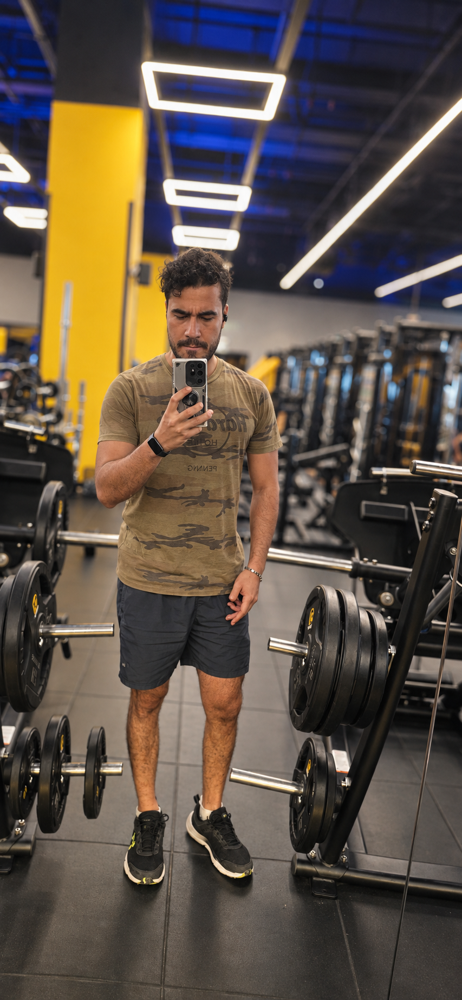
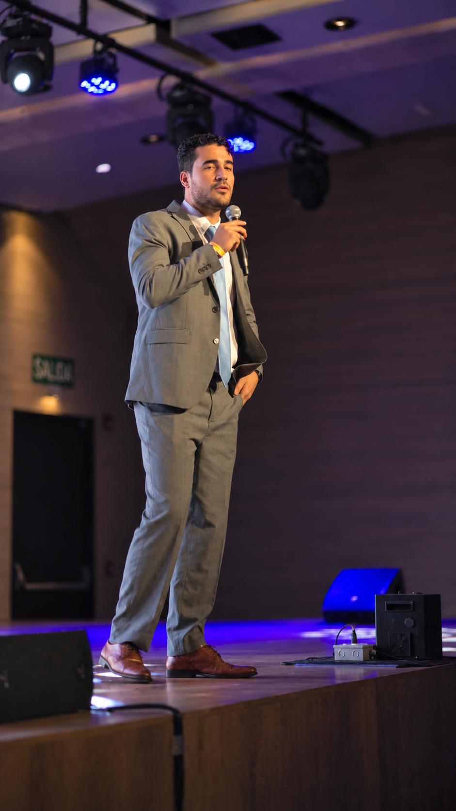

5 claves que sí funcionan
Deja de
procrastinar hoy.
No necesitas más motivación. Desliza →
No necesitas más motivación. Desliza →
Aburrimiento, miedo a hacerlo mal, no saber por dónde empezar.
No te falta disciplina: la tarea se siente pesada. Así que el truco es hacerla más ligera.

Comprométete solo a 2 minutos. Abrir el documento. Ponerte los tenis.

"Hacer la presentación" paraliza. "Escribir 3 títulos" no.
La fuerza de voluntad se agota. Tu entorno no. Haz que distraerte sea difícil y trabajar sea fácil.
Pon un temporizador: 25 min de foco, 5 de descanso. Saber que hay un final hace que empezar sea más fácil.
No procrastinamos por flojera, sino por miedo a que no quede bien. Date permiso de hacer una primera versión mala.